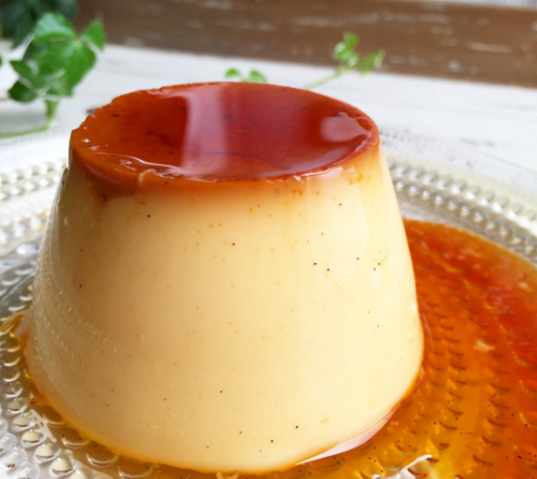
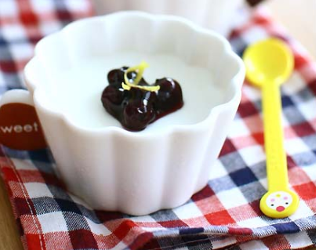
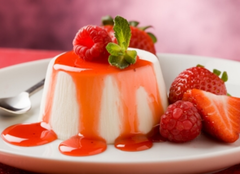

강의 신청

쉽게 만드는 커스터드 푸딩!
- 강 사 : 김초보
- 수강기간 : 3일
-
강좌 소개 :
푸딩의 기본, 커스터드 푸딩. 이것도 못만들면 다른건 꿈도 꾸지 마세요. 맛은 있으니 후회는 안할 겁니다.
150,000원
수강 신청

집에서도 만들 수 있는 우유푸딩!!
- 강 사 : 김중급
- 수강기간 : 5일
-
강좌 소개 :
특수 조리기구(오븐, 거품기, 기타 등등...)이 없이 집에서 흔히 볼 수 있는 재료와 기구들로 만들 수 있는 우유푸딩 강좌. 솔직히 가성비 생각하면 이게 좋습니다. 맛도 나쁘지 않음.
270,000원
수강 신청

푸딩의 궁극! 로얄★딸기우유☆ 푸딩
- 강 사 : 김영상
- 수강기간 : 50일
-
강좌 소개 :
궁극의 푸딩, 고급 딸기우유 푸딩을 만들 수 있는 절호의 기회. 이것만 만들면 당신의 디저트 인생은 완벽해 질 것이다. 단, 초심자에게 너무 어려울 수 있으니 기초를 갈고 입문 할 것.